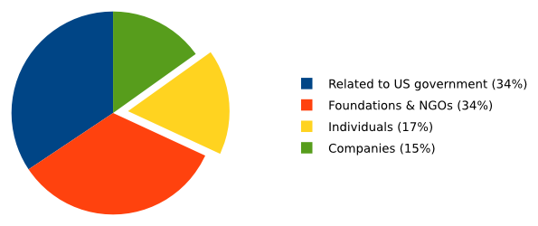

Today we are starting a donation campaign to fund our work in 2017.
Unlike most other tools on the Internet, Tails comes for free as in freedom. We are not selling your data, sending you targeted advertising, nor will ever sell our project to a big company. We give out Tails for free simply because everybody deserves to be protected from surveillance and censorship. But also because being free software is a necessary requirement for our tools to be safe, and protect you as intended. If our source code was closed, there would be no way of actually verifying that our software is trustworthy.
Since 2014, we raised 210'000€ on average each year, coming from:
- People like you
- Private companies like Mozilla or DuckDuckGo
- Foundations and NGOs like Hivos and Access Now
- Entities related to the US government like the Open Technology Fund (OTF) or the National Democratic Institute (NDI)

We often hear complaints about the fact that many software projects that are meant to fight surveillance, like Tor and Tails, get a lot of funding from the US government whose own surveillance projects are severely criticized. We completely share this concern and we will worry about our accountability and sustainability as long as the survival of our project depends on a few small grants, some of them coming from organizations linked to governments.
Now, we would like you to think about it: where should our funding come from?
The answer is clear to us: the survival of Tails should be guaranteed by our users themselves, so that in return, we can continue to use our money in their best interest, with complete independence.
From anonymized statistics on our website we know that Tails is used by around 18 000 people every day. If each of them gave 12€, the price of a USB stick, our budget for the whole year would be raised within one day. As you can see, funding Tails through donations is a realistic and our budget ridiculously small compared to the multibillionaire companies and agencies running the surveillance business.
But many of our users could actually get in trouble if they donated to an anti-surveillance tool like Tails. So when donating to Tails you are also helping all of these people by keeping Tails alive. Please consider setting up a yearly or monthly donation.
If you want Tails to remain independent, please take one minute to make a donation.